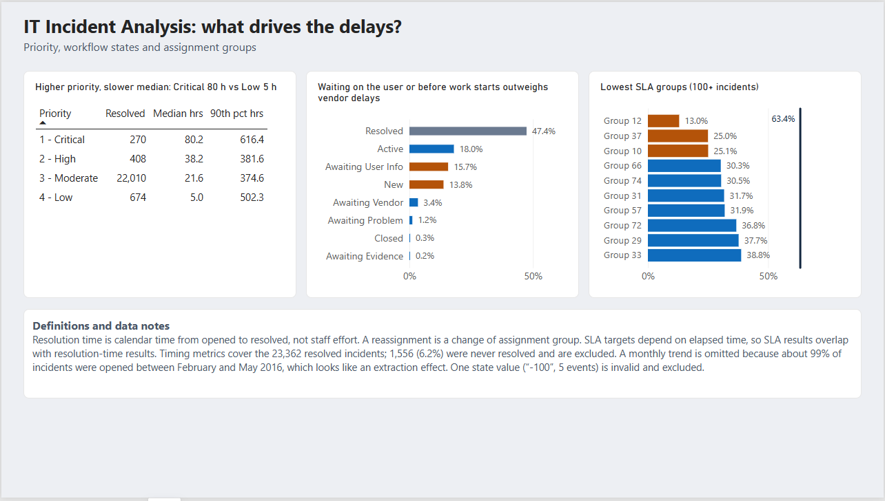

Where Do IT Incident
Delays Come From?
A ServiceNow incident analysis with PostgreSQL and Power BI.
Tools: SQL (CTEs, window functions, percentiles), Power BI, DAX.

The question
When IT incidents are resolved, where does the time go, and what is the most promising place to cut delays? This was written for an IT service desk manager deciding where to focus process improvements.
The data
The Incident management process enriched event log from the UCI Machine Learning Repository (CC BY 4.0) is an anonymized audit log from a ServiceNow instance: 141,712 events across 24,918 incidents and 36 attributes, with incidents opened between February 2016 and February 2017. Each row is one update to an incident, so I collapsed it to one row per incident using the update counter.
Approach
- Loaded the raw CSV as text, then cleaned it:
?became NULL, day/month/year timestamps were parsed, and boolean flags were converted. - Built an incident-level view with each incident's final state and its resolution time in hours.
- Analyzed resolution time by priority, the distribution of resolution times, reassignments, SLA by assignment group, and time spent in each state with the
LEADwindow function. - Built a two-page Power BI dashboard and checked every measure against the SQL output.
Key findings
Most incidents resolve quickly, but a long tail is slow
Of 23,362 resolved incidents, 51.7% were resolved within 24 hours and 22.9% took more than 7 days. Averages are far above medians, so I report medians and percentiles.
Reassignments go with much slower resolution
48.6% of resolved incidents were reassigned at least once, and reassigned incidents account for 72.6% of total elapsed resolution time. Median resolution time rises from 0.7 hours with no reassignments to 50.6, 167.8 and 336.6 hours with 1-2, 3-5 and 6+ reassignments. Of the 538 incidents reassigned six or more times, about 80% took longer than a week. The same pattern holds within Moderate priority alone, so it is not just a priority mix effect.
SLA attainment falls as reassignments rise
Across resolved incidents, SLA was met 77.1%, 52.5%, 28.8% and 8.6% of the time for 0, 1-2, 3-5 and 6+ reassignments. Overall, 63.4% of all incidents met their SLA.
Much of the time is spent waiting
Excluding the post-resolution wait before auto-close, the largest shares of time are Active (18.0%), Awaiting User Info (15.7%) and New, before work starts (13.8%). Awaiting Vendor is slow per event but rare (3.4%).
Higher-priority incidents were slower at the median
| Priority | Resolved incidents | Median hours | 90th percentile hours |
|---|---|---|---|
| 1 - Critical | 270 | 80.2 | 616.4 |
| 2 - High | 408 | 38.2 | 381.6 |
| 3 - Moderate | 22,010 | 21.6 | 374.6 |
| 4 - Low | 674 | 5.0 | 502.3 |
Critical and High are small groups, so I treat these figures as indicative.

Recommendation
The reassignment pattern is consistent, but there are several possible explanations, including that harder incidents get reassigned more. When the cause is unclear, a low-risk test beats a large change. I recommend piloting better first-time routing in one assignment group and comparing reassignment rates and resolution times with a similar group. If it works, scale it. Secondary levers are capturing the information needed from users earlier and shortening the time incidents spend in New before work starts.
Limitations
- Association, not causation. Harder incidents may be reassigned more often.
- SLA overlaps with timing. SLA targets depend on elapsed time, so the SLA result largely restates the resolution-time result.
- Unresolved incidents. 1,556 incidents (6.2%) were never resolved and are excluded from timing metrics.
- No reliable monthly trend. About 99% of incidents were opened between February and May 2016, which looks like an extraction effect.
- Elapsed time is not effort. Hours are calendar time between events, not staff time.
- Anonymized groups. Assignment groups differ in workload mix, so the SLA ranking shows where to investigate, not who performs worst.